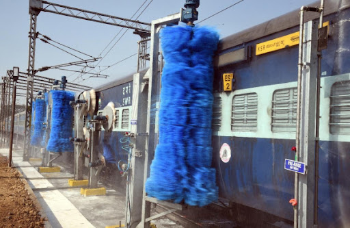

Train Wash
Benfits:
- More clean for the Aircraft
- Save times and Power only 30 min.
- Aircraft rust prevention
- Friendly and maintain proof
- Ease of payment and use
- New Idea Project
- Maintain and Protect the Aircraft
Technical Data
| No. | Function Descriptions | Brand Details | Remarks |
|---|---|---|---|
| (1) | The Train cleaning equipment mainly uses long-distance highpressure water cannons and shortdistance high-pressure water systems |
High -pressure water pump The rotor part of the pump is supported consistently by Rolling bearing at both ends |
Germany pinfl |
| (2) | To wash the entire surface of large and medium-sized aircraft (including fuselage, aircraft wings, and aircraft tail oil stains) | The pump runs smoothly | Japan NSK |
| (3) | To remove oil stains and dust. | This 5-outlets-pump is single stage Vertical pump, | Germany FUCHS |
| (4) | Red and ultraviolet detection function, automatic tracking and positioning, 24 hours automatic detection | The inlet of the pump is in the horizontal direction, and the outlet is arranged vertically upwards simplify the pipeline | France schneider |
| (5) | Sensing Train enters, the water cannon system automatically turn on,Scan from | The motor of the pump is horizontal structure, easy maintenance | |
| (6) | Horizontal, vertical, tilted orientation Directions. | different flow rates and lifts | Taiwan Delta |
| (7) | The central controller issues instructions,Then pumps started ,valve opened | After cleaning completed, the central controller will send instructions to stop ejatulating | Machine dimensions INSTALLATION SPACE SUPPLY STATION Main power Total power Water pressure |
| (8) |
A.Train enters cleaning area B.Device self-sense to start |
A.High -pressure water cannon Cleaning | Cleaning Procedures |
| (9) |
A.Mix the cleaning detergent B.Spray the cleaning detergent |
B.High -pressure water Cleaning | |
| (10) |
A.Decomposition and B.decontamination |
Drive away from the cleaning area, the cleaning is over |